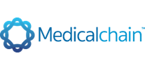

Applications
There are currently no free applications in the database.
Commercial
| Product | Description | Platform | Resources |
|---|---|---|---|
Admission24 |
Provides complete planning options from waiting list to admission and dismissal. Admission24 gives direct insight into the current room / bed occupancy. |
||
AFYA Better HIS |
AFYA Better HIS |
.Net | |
Agenda24 |
An agenda for healthcare professionals and patients. For caregivers there is an overview of all own activities and specific patient activities. Agenda24 is very comprehensive and easy to use. |
||
Argus24 |
Register freedom-restricting interventions within mental health care (GGZ). With Argus24 a clear registration can take place of the most applied forms of freedom-restricting interventions in mental health care: various forms of inclusion, fixation and the forced administration of medication, fluid and / or nutrition, regardless of the legal status of the patient. |
||
Better Meds |
Better Meds is a well-designed and powerful closed loop medication management system which was developed to completely replace time-consuming, error-prone, and paper-based processes for prescribing, medication administration, and pharmacist reviews. Better Meds fully supports even the most complex medication management scenarios in a simple and easy to use way. Decision support for situations known as “never events”, allergies, and dose range, as well as powerful integration options, empowers doctors, nurses, and pharmacists, allowing them to improve patient safety, and deliver better and more personalised medical care. Our comprehensive system helps with work prioritisation and significantly improves communication between physicians, nurses, and pharmacists. Furthermore, it provides full access to all structured clinical data so that it can be easily exported and used to generate dashboards, discover new knowledge, and create reports to reflect on and optimise workflows. |
All | |
Better Portal |
Better Portal is a web-based clinical portal that is highly configurable on the application and the data layer. It runs on top of a vendor-neutral electronic health record data platform – Better Platform™
|
All | |
Care Protect |
Care Protect is a patient observation and monitoring solution designed for care settings. Scoring modules are included for NEWS2 and Sepsis monitoring. Care Protect integrates with your existing environment (user authentication, patient records, and admission systems), with clinical data stored using openEHR standards and protocols. |
||
Careplans24 |
For creating, viewing, editing and printing treatment plans, including applying Informed consent and evaluations. Also suitable for nursing plans according to the Marie-Louise Vossen methodology. Use the Diagnosis24 module for making diagnoses. |
||

Childhood care, Growth Chart - Primary and Secondary care |
Lifecare Growth Chart or Kasvuseuranta application is used by Pediatricians and other Health Care professionals. Kasvuseuranta is designed to child’s and adolescent’s physical, mental and social growth monitoring and documentation from birth to age 20. |
||
Configurable Platform |
A software toolset that provides an unlimited number of protocolised patient pathways with the flexibility to support countless clinical, research and retail use cases and pathway designs. The benefits of our toolset are:
|
All | |
Connect24 |
This module gathers the clients healthcare data and transforms it to fit the MedMij standard. Connect24 is not limited to data directly from mConsole but thanks to adjustable mapping it can also collect data from any other healtcare system, which will be transformed in realtime and send to a PHE. |
||
Correspondence24 |
Create, view, edit, print and send letters electronically to GPs, referrers and other external parties. |
||
CrisisMonitor24 |
Receive timely identification of aggression and the prevention of compulsion and impulse. |
||
CTB24 |
A digital meeting board to support (multidisciplinary) teams with a responsibility for a group of patients. In practice, CTB24 is used to support FACT, IHT teams and clinical departments. |
||
Dashboard24/Infoboard24 |
Overview of data both within and outside a patient context, even if this information comes from different sources. |
||
DataWarehouse24 |
DataWarehouse24 enables those using mConsole modules to easily extract and manage large amounts of data. |
||
Dynaform24 |
Design your own digital forms and work with them. These dynamic forms can also be used in other mConsole modules. |
||
Financial24 |
Business financially in order with contract management, real-time validation of registrations and invoicing / declaration. Including message traffic and in accordance with laws and regulations. |
||
Lab24 |
Easy digital communication with all laboratories in the region. From creating lab orders and receiving lab results to implementing lab protocols. |
||
LifeChart24 |
For the registration and assessment of moods, life events, medication use, physical aspects and other psychological symptoms. |
||
LinkedEHR CarePlanning |
Ocean's LinkedEHR Integrated Care application, is a comprehensive tool that connects patients with their carers across a continuum of care – from the community to the hospital - underpinned by a comprehensive care planning tool. |
Windows | |
Mailbox24 |
Provides control over the complete electronic receiving and processing |
||
mConsole App |
The mConsole App makes caregivers ambulatory. Quickly view your agenda from the neighborhood, report directly from the client and access information from the EHR. |
||
mConsole suite |
A care provider portal for access to the complete EHR environment enriched with a wide variaty of modules. |
All | |
Measurements24 |
Allows all important somatic observations to be recorded and viewed. This concerns, among other things, blood pressure, temperature and blood sugar up to a complete fluid balance. |
||
Medication24 |
For registering medication depots and requesting current medication from an electronic prescription system. This data can be used in correspondence. |
||
Multimedia24 |
With its separate database, Multimedia24 is a safe place for storing documents, images and sound files in a client's file. |
||
Multiprac Infection control |
Multiprac Infection Control - Ocean Health Systems is Ocean’s Infection management solution built on an openEHR platform and now available in the Cloud, that encompasses all areas of an infection management program, including: integration with relevant master databases, identification of events of interest for the IC team, structured surveillance with automated reporting program management tools. Multiprac provides continuous, automated monitoring of Healthcare Associated Infections (HAI’s), and renders this data to assist in identifying adverse trends, informing improvement initiatives and assessing effectiveness of interventions - all in an efficient, timely manner. Multiprac includes a standards-compliant Patient Health Record, which enables both a patient-centric view and an activity view across multiple patients. This unique proactive approach allows you to enhance surveillance beyond the typical high-risk intensive care population. |
Windows | |

MyClinic.com |
MyClinic.com, a fully owned subsidiary of Medicalchain, provides a complete patient management tool to allow patients to review their health service options in our new Health marketplace. Patients will have access to book and reschedule their appointments digitally as well as review their reports with ease. They will also benefit from telemedicine services to support online consultations as well as face to face appointments. MyClinic.com is the first application worldwide to support cryptocurrency as a form of payment for medical services. Medicalchain is partnering with primary and secondary care clinics to expand the Health marketplace. |
All | |
Notification24 |
Keep healthcare professionals and patients safely informed about important events in mConsole. |
||
Observations - Primary and secondary care |
Lifecare Observations or Hoidonseuranta is used by Healthcare professionals. Lifecare Observations is intented for documenting the patient's measurement data and as a support for monitoring the effectiveness of the patient's care.
|
||
Ons Klinimetrie |
Met Ons® Klinimetrie bekijk en vergelijk je de resultaten van al je metingen makkelijk en snel. Een helder overzicht van de voortgang van je cliënten is het resultaat. |
||
Ons Wondzorg |
Ons Wondzorg (Woundcare) enables quickly recording information and shows it in a useful overview. |
Android | |
Open-eObs |
Open-eObs is an electronic patient observation system which allows clinicians to record observations of patients using hand-held devices. This system then calculates a score, based on National Early Warning Score (NEWS) guidelines which is used to identify and respond to high risk patients. |
||
Open-eREACT |
Open-eREACT is a modular electronic patient observation system, suitable for acute settings. Open-eREACT stores all clinical data according to openEHR standards and interfaces, using open clinical data models. Escalation and alerting features are provided, with scoring calculated using NEWS2 guidelines. |
||
Report24 |
For the registration and access to all reports, including the targeted reports created from the other modules. |
||
Router24 |
Provides a central point of contact for all PHE's. This endpoint establishes a secure channel in which the patient and the healtcare professional can safely transfer healtcare data. This modules takes away the need for singular configurations for each individual PHE and keeps it in one place. Code24 ensures that the healtcare data will land at the corresponding client. Router24 takes care of the Authentication- and Resource-server roles as described in the MedMij Framework. |
||
VC ObsCare |
VC ObsCare is a comprehensive and fully integrated e-Health system for obstetrics suitable for hospitals and clinics of all sizes. In 2015, the Northern Health Regional Administration (ARS Norte) acquired a regional version of VC ObsCare, as well as the license to use this software in all public hospitals in Portugal. VC ObsCare is migrating to openEHR. |
Windows |